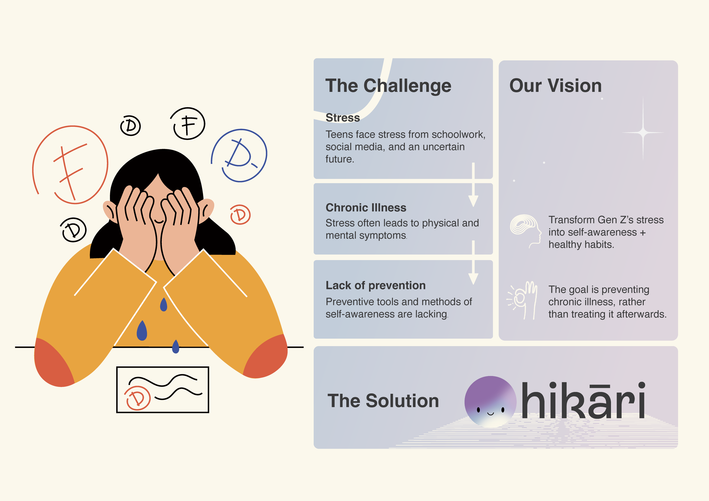
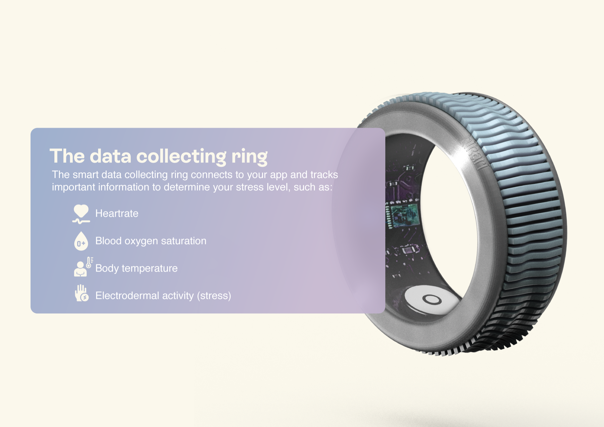
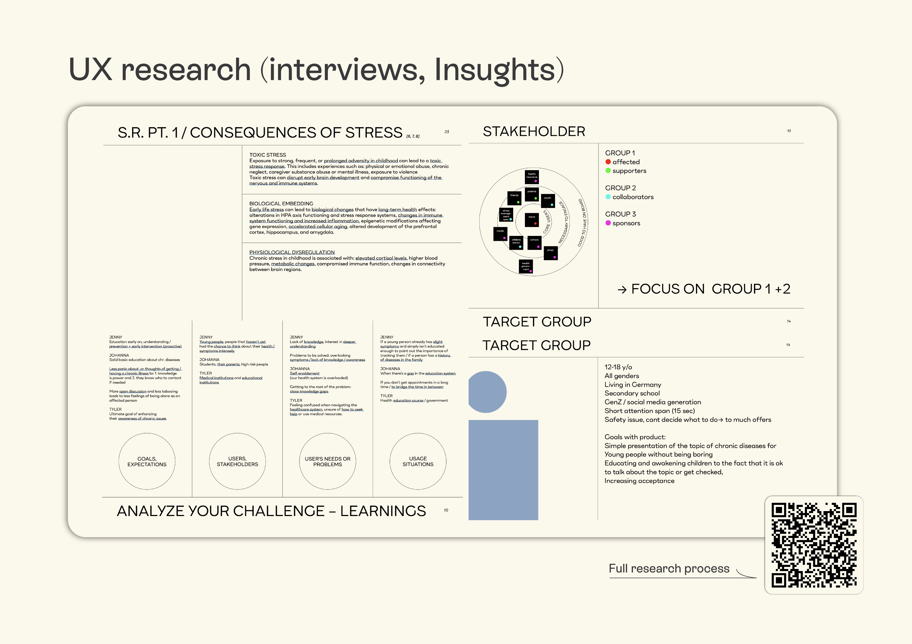
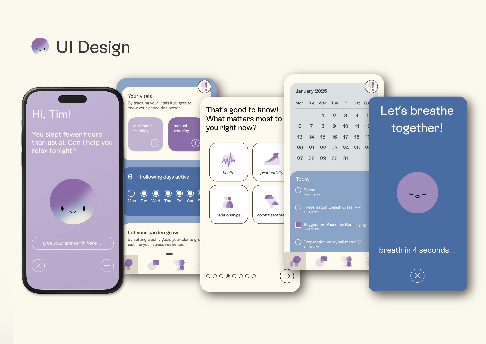
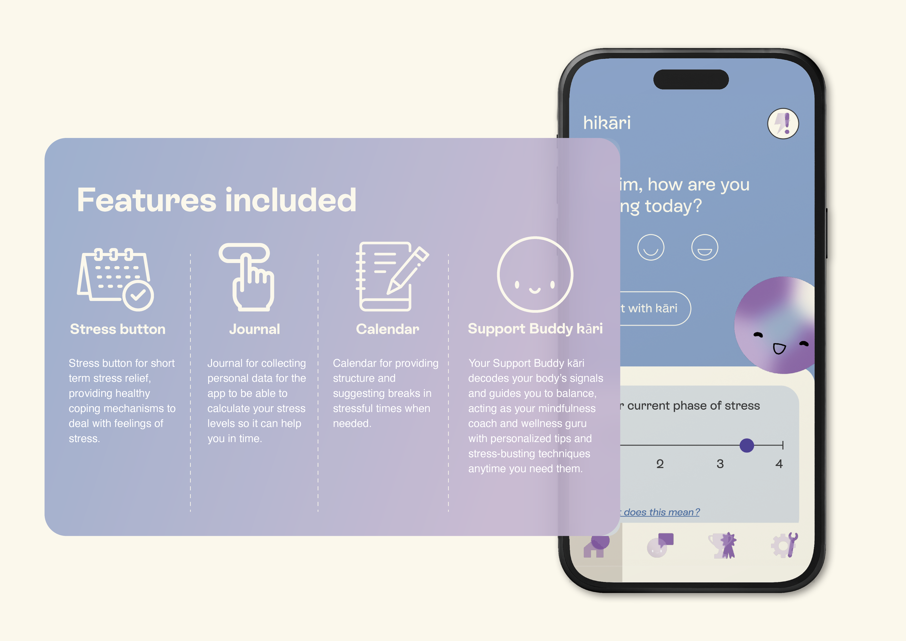
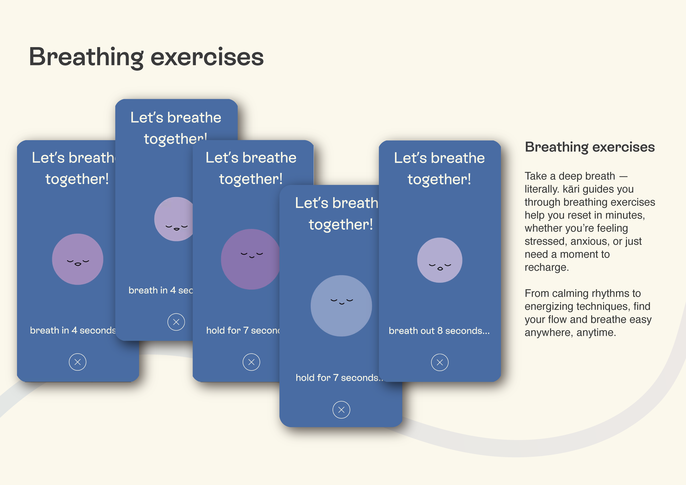

Hikari
A stress-relief service for Gen Z — biometric smart ring meets a quietly present support app.
Overview
Hikari — "light" in Japanese — is a stress-relief service built around one simple idea: by the time you feel stressed, your body has already been trying to tell you for hours. A smart ring senses the early signals; a companion app turns them into gentle, real-time support.
The generation that knows about stress, and drowns in it anyway.
Gen Z is the most mental-health-literate generation we've ever had, and the most anxious. Existing wellness apps ask for attention at exactly the moment there's none to spare — a reflection exercise, a journal prompt, a five-minute breathwork flow.
Hikari starts earlier, with something quieter: the body.


A ring, a nudge, a pause.
The ring continuously reads heart-rate variability, skin temperature, and breathing rhythm. When a pattern suggests rising stress, the app surfaces one small action sized for the moment — a 30-second breath, a shift in posture, a message from the loved one you've asked to be reminded of.
Nothing demanding. Nothing performative. Just light, moved slightly closer.



Wellbeing that meets you before you ask.
Hikari is my ongoing exploration of ambient, AI-supported care — interfaces that earn your trust by being light on attention and heavy on timing. A concept today; a direction I plan to push further during my master's at TH Augsburg.
